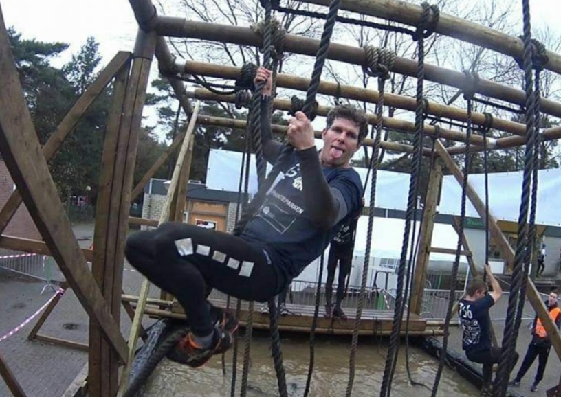
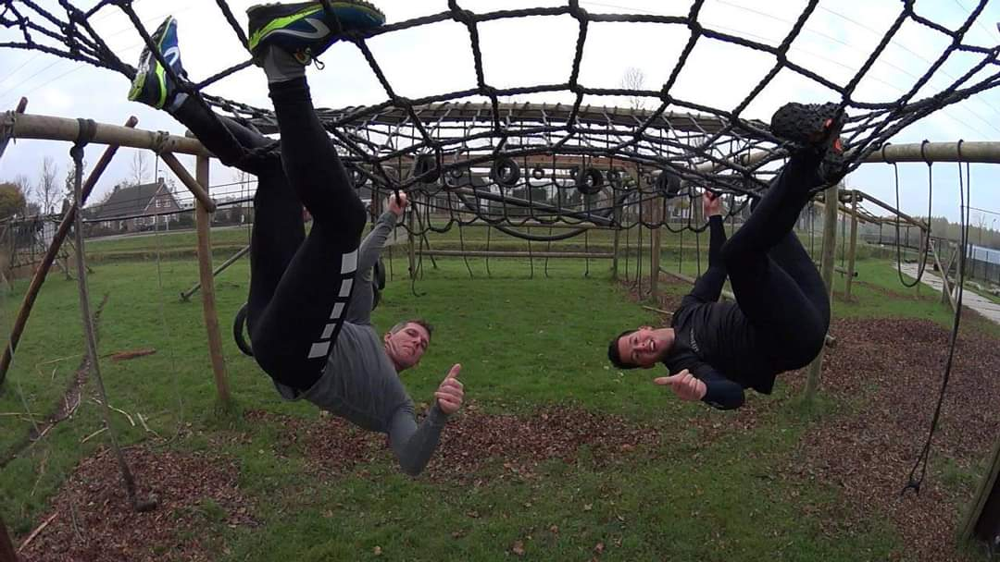
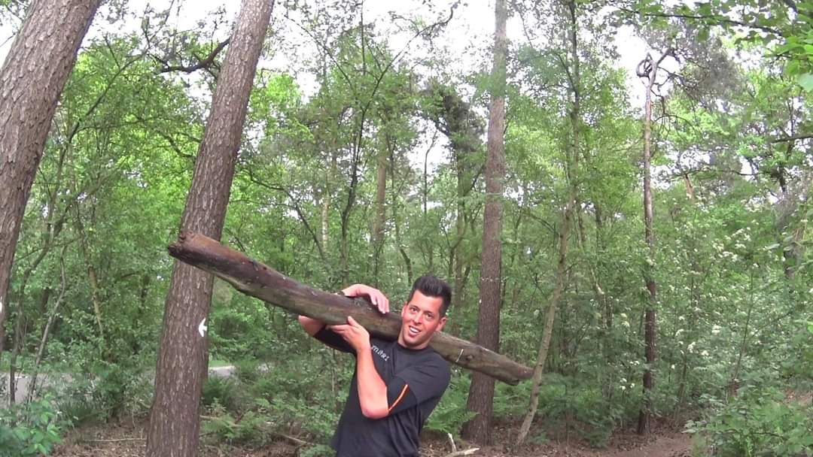
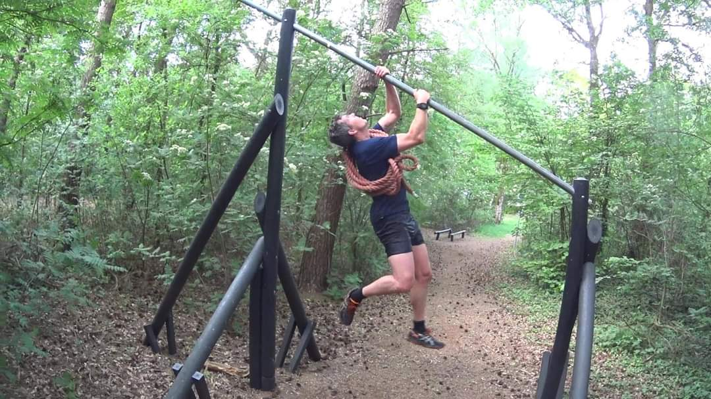
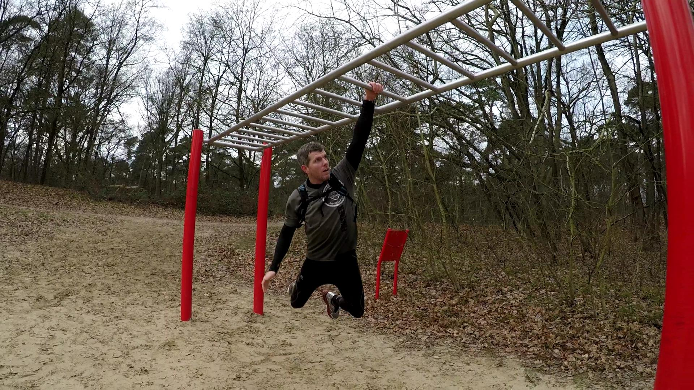

Schippers slag
Als je deze goed beheerst kun je hier veel voordeel bij hebben bij het touwklimmen.
Touw langs de binnenkant rechterknie laten lopen, dan over je rechtervoet en er weer onderdoor zodat je met je andere voet op het touw en je rechtervoet gaat staan. Dit gaat je uiteindelijk veel armkracht besparen.
Apenhang
De apenhang is ook een hindernis die regelmatig voorkomt.

De apenhang is eigenlijk niet zo moeilijk, je kunt deze beoefenen aan een gespannen touw of gewoon een balk of een net in een speeltuin. Je gaat met je handen en voeten om en om naar voren tot je er bent, probeer een losse grip met je handen te hebben, als je te krampachtig knijpt zullen je spieren sneller verzuren.
Ballastloop
Iets wat in elke obstacle run voorkomt is een ballastloop.
En ballastloop kan in alle vormen voorkomen, denk aan aan een boomstam, een ketting, een band of emmers gevuld mat zand. Dit is wel de makkelijkste hindernis om thuis te trainen, zoek wat zwaars uit en ga er een stuk meelopen.
Gripkracht
Gripkracht is belangrijk bij een obstaclerun.

Gripkracht heb je nodig bij een obstacle run, denk maar aan alle hindernissen die je moet overwinnen. Je zal je handen veel nodig hebben en dus veel kracht. Gelukkig kun je die makkelijk trainen door bijvoorbeeld aan een stang te hangen en dit zolang mogelijk vol te houden, doe dit een paar keer achter elkaar en het liefst meerdere keren per week. Je zal zien dat je snel progressie maakt.
Monkey bars
Altijd leuk en vaak aanwezig.
De monkey bars, deze zul je ook regelmatig langs zien komen in een run (of ringen/triangels), ze komen een beetje op hetzelfde neer. Het komt neer op gripkracht om te kunnen hangen en techniek. Armen lang, niet te strakke grip en zwaaien maar. Als je iets meer geoefend hebt kun je zelfs een paar bars over gaan slaan, zo kun je de hindernis uiteindelijk een stuk sneller nemen. Je kunt hem vaak al beoefenen met behulp van een voetbal goal.